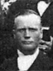

The Family of Joseph Smith and Annie Margaret Nielson Anderson
Home
Histories
Charts
Photos
Maps
Restricted
News
Info
Contact
| <--(return)-- |    | Jens Andersen and Ane Pedersen Anderson |
----> |  | Joseph Smith Anderson Born 3 OCT 1855 Died 6 MAY 1925 and Annie Margaret Nielson Born 20 MAR 1858 Died 6 NOV 1908 Married 6 DEC 1875 He also married Ane Cathrine Christensen 6 Mar 1879
|
|
Ada Anderson 8 OCT 1876 - 5 AUG 1881 Oak City, UT The 1st child of Joseph Smith Anderson and Annie Margaret Nielson |
Jens Franklin Anderson Born 14 NOV 1877 Oak City,Millard,UT Died 22 Nov 1932 Salt Lake City Married Eliza Ellen Matilda Hartley 3 Apr 1902 Salt Lake City, UT The 2nd child of Joseph Smith Anderson and Annie Margaret Nielson |
* |
Sidsel Ann Anderson 19 AUG 1880 - 2 NOV 1880 Oak City, UT The 3th child of Joseph Smith Anderson and Annie Margaret Nielson |
1 2 2 |
Joseph Lars Anderson Born 28 APR 1882 Oak City,Millard,UT Died 25 MAR 1953Oak City, UT Married Mary Elizabeth Stephenson 7 Nov 1906 Manti, UT Married Rosamay Webb The 4th child of Joseph Smith Anderson and Annie Margaret Nielson |
* |
Ida Lillian Anderson 21 FEB 1884 - 18 FEB 1891 Oak City, UT The 5th child of Joseph Smith Anderson and Annie Margaret Nielson |
* |
Albert Anderson 16 DEC 1886 - 17 DEC 1886 Oak City, UT The 6th child of Joseph Smith Anderson and Annie Margaret Nielson |
* |
John Milo Anderson 7 DEC 1888 - 25 DEC 1888 Oak City, UT The 7th child of Joseph Smith Anderson and Annie Margaret Nielson |
* |
Louis Elly Anderson 16 NOV 1890 - 27 JAN 1891 Oak City, UT The 8th child of Joseph Smith Anderson and Annie Margaret Nielson |
|
Edna Anderson Born 23 SEP 1893 Oak City,Millard,UT Died 23 Sep 1961 Oak City, UT Married Joseph Ira Hinckley Christensen 10 Sep. 1918 Fillmore, UT The 9th child of Joseph Smith Anderson and Annie Margaret Nielson |
|
Eva Anderson Born 12 OCT 1896 Oak City,Millard,UT Died 6 Oct 1973 Salt Lake City, UT Married John Quayle Dutson 15 Jan 1920 The 10th child of Joseph Smith Anderson and Annie Margaret Nielson |
|
Estella Anderson Born 7 DEC 1898 Oak City,Millard,UT Died 11 Aug 1943 Provo, UT Married Robert Andrews Wiley, Jr. The 11th child of Joseph Smith Anderson and Annie Margaret Nielson |
|
Lester Ivan Anderson Born 9 JUL 1901 Oak City,Millard,UT Died 8 MAR 1938 Oak City The 12th child of Joseph Smith Anderson and Annie Margaret Nielson |